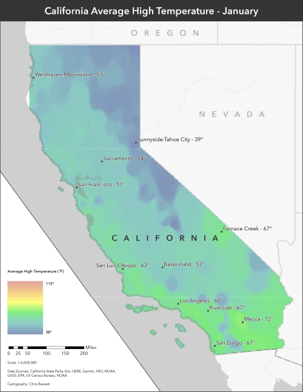
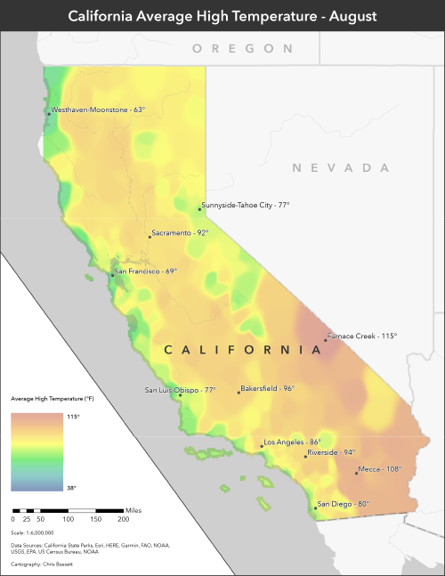

California Temperature Interpolation


California ranks third in the country in land area and includes the highest and lowest points in the continental United States, so it may not come as much of a surprise that the climate varies widely and in often surprising ways. Measurements from weather stations across the state were interpolated through both inverse distance weighted and emperical bayesian kriging methods to generate state-wide temperature predictions for January and August. TIGER/Line place boundaries were used to define city boundaries to calculate the warmest and coolest cities at for each month as well as temperatures in several major or high-interest cities.